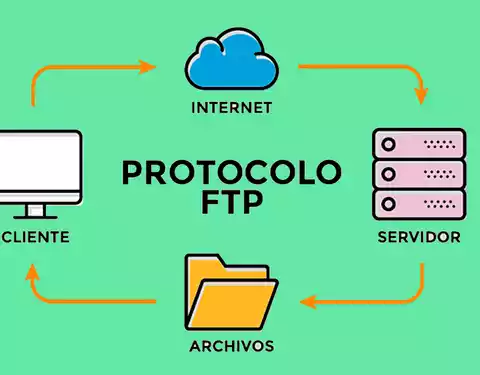

FTP es un protocolo que se utiliza para transferir todo tipo de archivos entre equipos conectados a una red, por ejemplo Internet. Las cuentas de FTP son el medio estándar para gestionar el contenido alojado en un servidor web: enviar archivos, descargarlos, crear directorios, borrar ficheros, entre otros.
